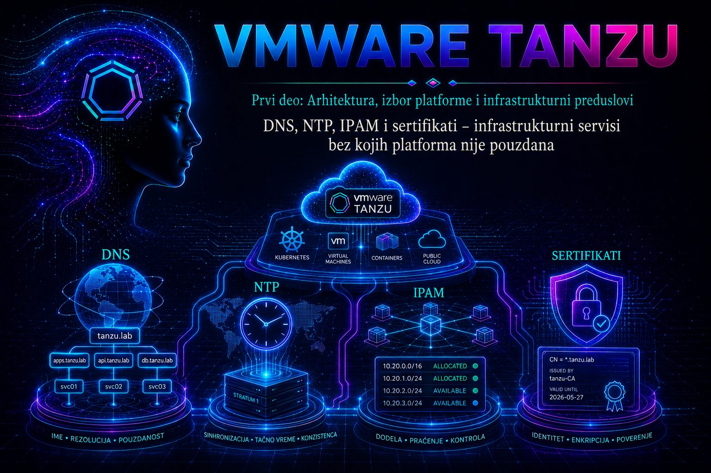

VMware & Tanzu

Prethodna lekcija definisala je kapacitet, topologiju i failure domain-e platforme. Međutim, ni pravilno dimenzionisan vSphere klaster ne može pouzdano da omogući Supervisor i vSphere Kubernetes Service (VKS) ako DNS ne razrešava imena dosledno, vreme nije sinhronizovano, IP opsezi nisu nedvosmisleno rezervisani ili sertifikacioni lanci nisu unapred projektovani. Ovi servisi nisu pomoćne stavke koje se „doteruju” posle implementacije: oni učestvuju u bootstrap-u, autentikaciji, otkrivanju servisa, izdavanju i proveri sertifikata, pristupu registrijima, radu load balancer-a i dijagnostici gotovo svakog incidenta.
Cilj lekcije je da administrator izgradi proverljivu infrastrukturnu osnovu pre pokretanja Supervisor čarobnjaka. Fokus nije samo na unosu nekoliko adresa u vSphere Client, već na autoritativnom vlasništvu nad zapisima i opsezima, redundansi, bezbednom životnom ciklusu, dokazima o ispravnosti i planu promene. Konkretna polja i podržane kombinacije zavise od vSphere/VCF izdanja, networking modela i izabranog load balancer-a, pa se pre implementacije moraju potvrditi u dokumentaciji za tačan build.
1. Četiri servisa, jedna zavisna platforma
| Servis | Šta platforma od njega očekuje | Tipična posledica kvara | Dokaz pre implementacije |
|---|---|---|---|
| DNS | Autoritativne forward i reverse odgovore, dosledan search domain i dostupnost preko UDP i TCP porta 53 | Supervisor ostaje u stanju Configuring, endpoint-i i registriji nisu dostupni, TLS ime se ne poklapa |
Isti očekivani odgovor sa svake relevantne mrežne zone i svakog konfigurisanog resolver-a |
| NTP | Zajednički, stabilan izvor vremena za vCenter, ESXi, Supervisor i VKS čvorove | SAML token deluje istekao, TLS provera pada, logovi se ne mogu korelisati, izbor lidera i distribuirani procesi postaju nepouzdani | Sinhronizovan status, mali offset i prohodan UDP 123 ka odobrenim izvorima |
| IPAM | Jedinstvene, neraskidane i dokumentovane opsege bez preklapanja i skrivene ponovne dodele | Duplikati adresa, ARP nestabilnost, neuspešan bootstrap, iscrpljen pool ili kolizija sa DHCP-om | Odobren plan opsega, rezervacije, gateway-i, VLAN-ovi, rute, vlasnik i evidencija potrošnje |
| PKI i sertifikati | Ispravan identitet endpoint-a, kompletan lanac poverenja, odgovarajuće SAN vrednosti i kontrolisanu obnovu | x509 greške, odbijena API veza, neuspela prijava ili prekid integracije posle rotacije |
Validacija lanca, imena, namene ključa i roka važenja iz perspektive stvarnog klijenta |
Važna administratorska veština jeste razlikovanje uzroka od simptoma. Poruka o autentikaciji može biti posledica vremenskog odstupanja; TLS greška može poticati od pogrešnog DNS imena; „nasumičan” mrežni prekid može biti duplikat IP adrese; a neuspešna obnova sertifikata može nastati zato što novi lanac nije distribuiran svim klijentima. Zato se ova četiri domena proveravaju zajedno, ali se vlasništvo, dokaz i korektivna mera vode odvojeno.
2. DNS arhitektura i pravila imenovanja
DNS za Tanzu okruženje ima najmanje tri uloge: infrastrukturni DNS za vCenter, ESXi i upravljačke komponente; DNS koji koriste Supervisor i workload mreže; i Kubernetes service discovery unutar svakog klastera, koji tipično obezbeđuje CoreDNS. CoreDNS ne zamenjuje enterprise DNS. On razrešava imena Kubernetes servisa i prosleđuje spoljne upite prema upstream resolver-ima; zbog toga kvar ili pogrešna konfiguracija upstream DNS-a ostaje vidljiv unutar podova.
Za vCenter Server Appliance stabilan FQDN nije kozmetički podatak: učestvuje u identitetu sistema i sertifikatima. Forward zapis mora vraćati očekivanu adresu, a reverse PTR treba da vraća odgovarajući FQDN. Kratka imena mogu biti pogodna administratoru, ali platformsku konfiguraciju treba zasnivati na potpunim imenima. Promena vCenter PNID-a, domena ili adrese nije rutinski način ispravljanja lošeg početnog DNS dizajna i mora se planirati prema podržanom postupku za konkretno izdanje.
2.1. Forward, reverse, TTL i split-horizon DNS
- Forward zapisi: A za IPv4 i AAAA samo kada je IPv6 stvarno podržan i usmeravan kroz ceo tok. Ne objavljivati „ukrasni” AAAA zapis ako klijenti do te adrese ne mogu da stignu.
- Reverse zapisi: PTR nije zamena za A zapis, ali je važan za konzistentnost, reviziju i pojedine bezbednosne provere. Forward i reverse odgovor ne smeju voditi ka različitim identitetima.
- TTL: nizak TTL olakšava planiranu migraciju, ali povećava broj upita; visok TTL smanjuje opterećenje, ali produžava propagaciju greške. TTL se smanjuje pre promene, a ne tek po nastanku incidenta.
- Split-horizon: isto ime može imati različite odgovore u različitim zonama samo ako je to nameran, dokumentovan dizajn. Validacija mora biti izvršena iz svake mreže koja će ime koristiti.
- Search domain: služi pogodnosti, ne identitetu. Preduge ili dvosmislene liste mogu proizvesti neželjene upite i spor fallback; konfiguracije i sertifikati treba da koriste FQDN.
2.2. Dostupnost, portovi i ponašanje resolver-a
DNS mora biti dostupan iz management i workload putanja koje ga koriste. Dozvoljavanje samo UDP porta 53 nije dovoljno: veći odgovori, DNSSEC i fallback mogu zahtevati TCP 53. Najmanje dva resolver-a treba da budu stvarno nezavisna koliko dizajn organizacije dopušta; dve adrese na istom kvarljivom sistemu nisu puna redundansa. Redosled servera takođe nije garancija aktivno-aktivnog balansiranja, jer klijentske biblioteke imaju različito ponašanje pri timeout-u i ponovnom pokušaju.
Dinamičko DNS ažuriranje može biti opravdano kada ga IPAM ili DHCP obavlja autentifikovano i revizijski, ali Supervisor implementacija ne sme zavisiti od nekontrolisanog „ko prvi registruje ime” procesa. Produkciona praksa je da se potrebni infrastrukturni zapisi, zone i delegacije pripreme kroz change proces, a da se automatizovana ažuriranja ograniče na tačno definisane zone i identitete.
2.3. DNS plan koji se predaje timu za mrežu
| Polje | Primer laboratorijske vrednosti | Produkcioni zahtev |
|---|---|---|
| Zona platforme | tanzu.lab.example |
Vlasnik zone, delegacija, dozvoljeni update mehanizam i retention audit zapisa |
| Resolver-i | 192.0.2.53, 192.0.2.54 |
Dve dostupne adrese, ruta iz svih potrebnih mreža, UDP/TCP 53 i monitoring |
| Search domain | tanzu.lab.example |
Kratka, nedvosmislena i identična vrednost gde je potrebna |
| API/VIP ime | api.sv01.tanzu.lab.example |
A/AAAA prema stvarnoj arhitekturi, odgovarajući SAN i definisan TTL |
| Reverse zona | 2.0.192.in-addr.arpa |
PTR za infrastrukturne endpoint-e i potvrđena forward/reverse doslednost |
3. NTP: vreme kao bezbednosna i distribuirana zavisnost
Vreme utiče na rok važenja X.509 sertifikata, SAML i druge tokene, događaje, logove, audit trag, metrike i koordinaciju distribuiranih komponenti. Broadcom-ova dokumentacija za Supervisor zahteva NTP, a relevantni KB članci pokazuju da odstupanje između vCenter-a, ESXi hostova i Supervisor-a može izazvati neuspelu kubectl vsphere login prijavu jer se token smatra isteklim ili još nevažećim. Zato se poruka o tokenu ne leči automatski promenom identiteta ili sertifikata: prvo se proverava vreme na obe strane transakcije.
Svi slojevi treba da koriste isti skup organizacionih izvora ili izvore koji imaju zajedničku pouzdanu referencu. Ne preporučuje se mešanje nasumičnih javnih NTP servera, vremena sa hypervisor-a i privatnog NTP-a. Virtuelna mašina ne treba istovremeno nekontrolisano da koriguje vreme i preko VMware Tools sinhronizacije i preko NTP klijenta, osim kada je takvo ponašanje izričito projektovano i podržano.
3.1. Stratum, offset, jitter i reachability
Administrator ne potvrđuje NTP samo time što je adresa servera upisana. Potrebno je proveriti da je klijent izabrao izvor, da je izvor dostupan, da offset ostaje mali i stabilan i da nema učestalih step korekcija. Stratum nije ocena kvaliteta sam za sebe: nizak stratum sa nestabilnom mrežom može biti lošiji od stabilnog, nadziranog izvora višeg stratuma. Praćenje treba da obuhvati offset, jitter, gubitak dosegljivosti i promenu izabranog peer-a.
Veliko trenutno pomeranje sata na aktivnoj distribuiranoj platformi nosi rizik. Najpre se utvrđuju obim i posledice, zatim se bira podržan postupak za konkretni NTP klijent i komponentu. Ručna komanda date nije produkcioni lek: može otežati korelaciju, narušiti tokene i prikriti osnovni uzrok.
4. IPAM i planiranje adresnog prostora
IPAM je proces i sistem evidencije, a ne samo tabela slobodnih adresa. On mora povezati adresu sa mrežom, VLAN-om ili segmentom, gateway-em, maskom/prefiksom, DNS zapisom, vlasnikom, namenom, statusom rezervacije, datumom promene i životnim ciklusom objekta. Bez te veze administrator ne može pouzdano dokazati da pool nije u koliziji sa DHCP opsegom, drugom lokacijom, VPN rutom ili već postojećom platformom.
4.1. Razdvajanje kategorija adresa
- management adrese vCenter-a, ESXi hostova i drugih infrastrukturnih komponenti;
- adrese Supervisor control-plane VM-ova i njihovog API/VIP endpoint-a;
- workload mreže za čvorove VKS klastera;
- ingress ili load-balancer VIP opsezi za objavljene servise;
- pod i service CIDR opsezi kada ih izabrani networking model zahteva;
- egress/SNAT adrese i posebni opsezi infrastrukturnih servisa.
Tačne kategorije i način dodele zavise od toga da li se koristi vSphere networking, NSX ili druga podržana integracija i koji load balancer je izabran. CIDR-i Kubernetes podova i servisa ne smeju se preklapati sa rutiranim enterprise mrežama, udaljenim lokacijama ni međusobno. Pool treba dimenzionisati za početno stanje, rolling upgrade, privremeno postojanje starih i novih čvorova, rast i rezervu za oporavak. „Ima tačno onoliko adresa koliko ima VM-ova” nije održiv plan.
4.2. DHCP naspram statičkog pool-a
Izbor nije ideološki. Koristi se model koji dokumentacija podržava za tačan Supervisor networking scenario. Ako je potreban DHCP, moraju se proveriti obavezne opcije, ponašanje client identifier-a, lease trajanje, DNS serveri, search domen i odsustvo preklapanja sa statičkim rezervacijama. Ako se koristi statički pool, IPAM mora sprečiti paralelnu dodelu i čuvati istoriju. U oba slučaja gateway, MTU, rute i firewall pravila moraju odgovarati stvarnoj putanji, a ne samo nacrtu.
5. Sertifikati, identitet endpoint-a i granice poverenja
X.509 sertifikat vezuje javni ključ za identitet i namenu. Klijent pri TLS povezivanju proverava najmanje rok važenja, lanac do pouzdanog CA, potpis, odgovarajuću namenu ključa i poklapanje imena ili IP adrese sa Subject Alternative Name (SAN) ekstenzijom. Polje Common Name nije pouzdana zamena za ispravan SAN. Sertifikat može biti kriptografski validan, ali operativno neupotrebljiv ako klijent ne veruje njegovom CA lancu ili koristi drugo ime endpoint-a.
5.1. Ne postoji jedan „Tanzu sertifikat”
| Granica poverenja | Primer | Ko mora da veruje lancu | Napomena za životni ciklus |
|---|---|---|---|
| vSphere upravljanje | vCenter Machine SSL, solution users, ESXi sertifikati | vSphere komponente, administrativni klijenti i integracije | VMCA može raditi u različitim podržanim modelima; zamena mora pratiti vSphere proceduru |
| Supervisor API | Kubernetes API endpoint i pripadajući CA podaci | kubectl, vSphere autentikacioni tok i povezane komponente |
Ne menjati ručno fajlove na control-plane VM-ovima; koristiti podržan workflow |
| VKS klaster | API server, kubelet i interni klasterski sertifikati | Čvorovi, kontroleri i administrativni klijenti konkretnog klastera | Rotacija zavisi od VKS verzije i lifecycle kontrolera |
| Platformski i aplikacioni servisi | Registry, ingress, Git, identity provider, monitoring | Podovi, korisnici i automatizacije koje pozivaju servis | Trust bundle mora stići do stvarnog potrošača; Kubernetes Secret sam po sebi nije dokaz poverenja |
Privatni ključ mora biti zaštićen, imati najmanje potrebne privilegije pristupa i nikada se ne sme unositi u tiket, Git repozitorijum ili primer u dokumentaciji. CSR treba generisati na komponenti ili u kontrolisanom PKI procesu, uz tačne SAN vrednosti i odobrenu key usage konfiguraciju. Kopiranje istog privatnog ključa na više nepovezanih endpoint-a povećava blast radius kompromitacije.
5.2. Rotacija bez iznenađenja
- Inventarisati endpoint, vlasnika, izdavaoca, SAN, serijski broj, rok važenja, algoritam, dužinu ključa i sve potrošače.
- Proveriti podržan postupak za tačan proizvod, verziju i tip sertifikata; ne koristiti generički OpenSSL postupak za interne sertifikate kojima upravlja lifecycle kontroler.
- Pripremiti novi lanac i unapred distribuirati CA poverenje gde je moguće.
- Napraviti backup prema zvaničnoj proceduri i definisati rollback; snapshot nije univerzalna zamena za konzistentan backup.
- Zameniti sertifikat u kontrolisanom change prozoru i validirati iz perspektive svih ključnih klijenata.
- Tek posle dokazanog oporavka ukloniti stari trust anchor, opozvati sertifikat kada je potrebno i ažurirati inventar.
Upozorenje: ručna izmena sertifikata, konfiguracije ili Kubernetes objekata na Supervisor control-plane VM-ovima može učiniti okruženje nepodržanim ili nepopravljivim. SSH pristup koristi se samo za read-only dijagnostiku koju nalaže zvanična procedura ili Broadcom podrška. Sertifikati Supervisor-a i VKS klastera menjaju se podržanim lifecycle postupkom za konkretno izdanje.
6. Projektantski dokument i matrica odgovornosti
Pre implementacije mora postojati jedna verzionisana matrica koja povezuje tehničku vrednost i njenog vlasnika. DNS tim odobrava zone i zapise, mrežni tim rute i firewall, bezbednosni ili PKI tim profile sertifikata i CA lance, virtualization tim vCenter/ESXi konfiguraciju, a platform tim Supervisor i VKS potrošnju. Za svaki zahtev beleže se dokaz, datum provere i osoba koja je odobrila promenu.
| Kontrola | Vlasnik | Dokaz | Prag za prolaz |
|---|---|---|---|
| DNS forward/reverse | DNS + platform tim | Sačuvan izlaz upita iz management i workload zone | Očekivani, nedvosmisleni i međusobno saglasni odgovori |
| NTP sinhronizacija | Infrastruktura | Status vCenter-a, svih ESXi hostova i dostupnih klijenata | Izvor izabran, offset unutar internog SLO-a, bez alarma |
| IP pool | IPAM + mrežni tim | Odobrena rezervacija i test odsustva konflikta | Nema preklapanja; postoji rezerva za rast i upgrade |
| TLS/PKI | PKI + vlasnik servisa | Lanac, SAN, rok i test stvarnog klijenta | Bez greške poverenja ili imena; monitoring isteka aktivan |
7. Praktikum – izrada i dokazivanje infrastrukturnog pre-check paketa
Cilj: pripremiti dokaz da laboratorijsko okruženje ispunjava DNS, NTP, IPAM i TLS preduslove pre omogućavanja Supervisor-a. Vežba ne menja Supervisor niti sertifikate; koristi read-only testove sa administrativne Linux radne stanice, vCenter VAMI-ja i PowerCLI stanice.
Topologija: jedan vCenter, najmanje dva ESXi hosta, dva DNS resolver-a, dva NTP izvora, administrativna radna stanica i unapred rezervisani laboratorijski opsezi. Dokumentovati management, workload i VIP mrežu. Adrese iz opsega 192.0.2.0/24, 198.51.100.0/24 i 203.0.113.0/24 u primerima su dokumentacione i moraju se zameniti stvarnim laboratorijskim vrednostima.
Privilegije i rizik: DNS i TLS provere zahtevaju običan korisnički nalog; PowerCLI provera zahteva read-only vCenter privilegije; VAMI pregled vremena zahteva odgovarajući administratorski pristup. Svi koraci do posebno označenog testa incidenta čitaju stanje. Ne pokretati komande za promenu vremena, DNS-a, IP pool-a ili sertifikata.
Vežba 1 – autoritativna DNS validacija
Na Linux administrativnoj stanici postaviti stvarne vrednosti. dig sa znakom @ pita tačno određeni resolver, čime se izbegava lažan uspeh iz lokalnog cache-a ili drugog DNS servera.
DNS1="192.0.2.53"
DNS2="192.0.2.54"
VCENTER_FQDN="vcsa01.tanzu.lab.example"
VCENTER_IP="192.0.2.20"
dig @"$DNS1" "$VCENTER_FQDN" A +noall +answer
dig @"$DNS2" "$VCENTER_FQDN" A +noall +answer
dig @"$DNS1" -x "$VCENTER_IP" +noall +answer
dig @"$DNS2" -x "$VCENTER_IP" +noall +answer
dig @"$DNS1" "$VCENTER_FQDN" A +tcp +noall +answerOčekivani rezultat: oba resolver-a vraćaju istu očekivanu adresu, PTR vraća planirani FQDN, a TCP upit uspeva. Upisati TTL iz odgovora. Ponavljanje testa iz workload mreže mora dati odgovor predviđen split-horizon dizajnom.
Troubleshooting grana: ako samo jedan resolver daje pogrešan odgovor, proveriti replikaciju zone i serial; ako UDP radi, a TCP ne radi, proveriti firewall; ako odgovor varira između mreža, potvrditi da li je split-horizon nameran. Ne popravljati klijentski /etc/hosts fajl kao trajno rešenje: time se zaobilazi autoritativni izvor i problem ostaje drugim komponentama.
Vežba 2 – DNS putanja sa ESXi hosta
PowerCLI komande se izvršavaju sa stanice na kojoj je instaliran VMware PowerCLI. Prvi blok čita konfiguraciju hostova; ne menja stanje.
Connect-VIServer -Server "vcsa01.tanzu.lab.example"
Get-VMHost | Sort-Object Name | ForEach-Object {
$network = Get-VMHostNetwork -VMHost $_
[PSCustomObject]@{
VMHost = $_.Name
DnsAddress = ($network.DnsAddress -join ", ")
DomainName = $network.DomainName
Search = ($network.SearchDomain -join ", ")
}
} | Format-Table -AutoSizeZa aktivni upit koristi se ESXi Shell samo ako je pristup odobren i privremeno omogućen prema politici organizacije. nslookup je read-only test:
nslookup vcsa01.tanzu.lab.example 192.0.2.53
nslookup vcsa01.tanzu.lab.example 192.0.2.54Kriterijum završetka: svaki host ima odobrene resolver-e i iz svoje management putanje dobija očekivani odgovor. Posle testa zatvoriti privremeni ESXi Shell/SSH pristup i sačuvati rezultat uz naziv hosta i UTC vreme.
Vežba 3 – dokaz NTP stanja
U vCenter Server Management interfejsu na portu 5480 otvoriti Time i zabeležiti izvore, trenutno vreme i status sinhronizacije. Na svakom ESXi hostu u vSphere Client-u proveriti Configure → System → Time Configuration. Zatim PowerCLI-jem popisati servis i podešene NTP servere:
Get-VMHost | Sort-Object Name | ForEach-Object {
$ntp = Get-VMHostNtpServer -VMHost $_
$svc = Get-VMHostService -VMHost $_ | Where-Object Key -eq "ntpd"
[PSCustomObject]@{
VMHost = $_.Name
Ntp = ($ntp -join ", ")
Running = $svc.Running
Policy = $svc.Policy
}
} | Format-Table -AutoSizeAko organizacija koristi chrony na administrativnoj Linux stanici, sledeće komande čitaju stanje lokalnog klijenta i pomažu da se potvrdi dostupnost istih izvora:
timedatectl status
chronyc tracking
chronyc sources -vValidacija: svi vSphere slojevi koriste odobren, međusobno saglasan skup izvora; servis radi; nema alarma; offset je unutar internog SLO-a. Ako se kasnije dijagnostikuje Supervisor, zvanično navedene read-only provere uključuju date, timedatectl status i odgovarajući status NTP klijenta, ali SSH pristup control-plane VM-u koristi se samo prema podržanoj proceduri.
Vežba 4 – IPAM kontrola i test preklapanja
Napraviti CSV ili IPAM izvoz sa kolonama: network, purpose, gateway, first, last, vlan, owner, status i change_id. Sledeći Python primer je read-only lokalna provera CIDR preklapanja; ne komunicira sa mrežnim uređajima:
from ipaddress import ip_network
networks = {
"management": ip_network("192.0.2.0/26"),
"supervisor": ip_network("192.0.2.64/27"),
"workload": ip_network("198.51.100.0/24"),
"service_cidr": ip_network("10.96.0.0/16"),
"pod_cidr": ip_network("10.244.0.0/16"),
}
errors = []
items = list(networks.items())
for index, (name_a, net_a) in enumerate(items):
for name_b, net_b in items[index + 1:]:
if net_a.overlaps(net_b):
errors.append(f"PREKLAPANJE: {name_a} {net_a} / {name_b} {net_b}")
if errors:
raise SystemExit("\n".join(errors))
print("Nema preklapanja u unetom skupu mreža.")Ograničenje: skripta proverava samo uneseni skup. Uspeh nije dokaz da nema konflikta sa drugim lokacijama, cloud mrežama, VPN-om ili budućim rutama. Produkcioni kriterijum zahteva poređenje sa autoritativnim enterprise IPAM-om i potvrdu mrežnog tima. Ne koristiti ping kao jedini dokaz da je adresa slobodna: uređaj može biti ugašen ili filtrirati ICMP.
Vežba 5 – TLS pregled iz perspektive klijenta
Sledeća komanda uspostavlja TLS vezu i prikazuje leaf sertifikat vCenter endpoint-a. Ne šalje privatni ključ i ne menja server:
ENDPOINT="vcsa01.tanzu.lab.example"
openssl s_client \
-connect "${ENDPOINT}:443" \
-servername "$ENDPOINT" \
-showcerts </dev/null 2>/dev/null \
| openssl x509 -noout \
-subject -issuer -serial -dates \
-ext subjectAltName \
-ext extendedKeyUsageZa eksplicitnu proveru imena i lanca koristiti CA bundle kome konkretni klijent treba da veruje:
openssl s_client \
-connect "${ENDPOINT}:443" \
-servername "$ENDPOINT" \
-verify_hostname "$ENDPOINT" \
-CAfile ./approved-ca-chain.pem \
-verify_return_error </dev/nullOčekivani rezultat: SAN sadrži korišćeni FQDN, datum notBefore je u prošlosti, notAfter ostavlja dovoljan operativni period, issuer pripada odobrenom lancu i završna provera vraća Verify return code: 0 (ok). Fajl approved-ca-chain.pem sadrži javne CA sertifikate, nikada privatni ključ.
Troubleshooting grana: kod greške imena prvo porediti korišćeni URL, DNS odgovor i SAN; kod nepotpunog lanca proveriti šta server zaista šalje i šta klijent ima u trust store-u; kod vremenske greške proveriti lokalni sat i rok važenja. Opcija -k u alatima poput curl može dokazati samo da mrežna/TLS putanja postoji uprkos proveri, ali nije korektivna mera i ne sme postati produkciona konfiguracija.
Vežba 6 – bezbedna simulacija incidenta i dijagnostičko stablo
Laboratorijski scenario: bez menjanja platforme, na izdvojenoj administrativnoj VM namerno upitati pogrešan DNS server ili koristiti pogrešno ime endpoint-a, a zatim zabeležiti razliku u simptomima. Ne menjati enterprise zonu, vCenter vreme niti sertifikat.
- Simptom: zabeležiti tačnu poruku, UTC vreme, klijent, izvor i odredište.
- Obim: proveriti da li kvar vidi jedan klijent, jedna mreža, svi hostovi ili svi korisnici.
- Najmanje invazivni dokazi: DNS A/PTR i TCP odgovor, ruta i port, lokalno/NTP vreme, TLS SAN/lanac/rok.
- Hipoteza: formulisati jednu proverljivu pretpostavku, na primer „workload resolver ima zastarelu kopiju zone”.
- Potvrda: porediti autoritativni odgovor, serial zone, druge resolver-e i pogođenu mrežu.
- Privremeno zaobilazno rešenje: samo ako je odobreno i reverzibilno; ne prikrivati problem trajnim
/etc/hostszapisom ili isključenom TLS proverom. - Trajna mera: ispraviti autoritativni izvor, propagirati promenu, ponoviti test iz svih zona i ažurirati change zapis.
| Simptom | Neposredni uzrok | Mogući osnovni uzrok | Bezbedna korekcija |
|---|---|---|---|
NXDOMAIN ili timeout |
Nema zapisa ili resolver nije dostupan | Pogrešna zona, replikacija, ACL ili blokiran UDP/TCP 53 | Ispraviti autoritativni zapis/putanju i validirati sa oba resolver-a |
SAML ili kubectl token je istekao |
Vremensko odstupanje | Različiti NTP izvori, blokiran UDP 123 ili neaktivan klijent | Obnoviti podržanu sinhronizaciju i potvrditi vreme svih učesnika |
| Povremeni prekidi ka jednoj adresi | Duplikat IP/ARP promena | Preklapanje DHCP i statičkog pool-a ili paralelna ručna dodela | Izolovati konflikt, ispraviti IPAM i kontrolisano ponovo dodeliti adresu |
x509: certificate signed by unknown authority |
Klijent nema odgovarajući trust anchor ili server ne šalje intermedijarni lanac | Nepotpuna distribucija CA lanca posle rotacije | Distribuirati odobren lanac podržanim putem; ne isključivati proveru |
Rollback i povratak laboratorije
Pošto standardne vežbe čitaju stanje, rollback nije potreban. U simulaciji vratiti administrativnu VM na prvobitni resolver i ukloniti samo lokalne test vrednosti koje su uvedene u okviru vežbe. Potvrditi ponovnim DNS, NTP i TLS testom. Ako je tokom stvarnog incidenta promenjen autoritativni DNS zapis, IP rezervacija ili trust bundle, rollback mora koristiti prethodno dokumentovanu vrednost i isti change proces; nasumično vraćanje snapshot-a vCenter-a ili Supervisor VM-a nije prihvatljiv generički oporavak.
8. Logovi, događaji i korelacija dokaza
Na vCenter Server Appliance-u relevantni tragovi Supervisor lifecycle-a nalaze se naročito u direktorijumu /var/log/vmware/wcp, dok se korelacija sa vCenter i ESX Agent Manager operacijama radi kroz /var/log/vmware/vpxd i /var/log/vmware/eam. Pristup tim logovima mora biti read-only i vremenski ograničen na prozor incidenta. Tražiti tačan FQDN, IP, serijski broj sertifikata, x509, timeout, NXDOMAIN i vremenske oznake, a nalaz uvek povezati sa DNS/NTP dokazom spolja.
grep -RniE 'x509|certificate|NXDOMAIN|timeout|no such host' \
/var/log/vmware/wcp 2>/dev/nullOva komanda čita logove, ali može proizvesti veliki izlaz; ograničiti pretragu na relevantne fajlove i period. Na Supervisor control-plane VM-u ne menjati konfiguraciju niti brisati objekte. Broadcom izričito upozorava da ručne izmene i brisanje EAM agency objekata nisu validan troubleshooting postupak i mogu dovesti do redeploy-a.
9. Administratorske prakse
- DNS, NTP, IPAM i PKI zahteve tretirati kao formalne acceptance kriterijume, ne kao pretpostavke.
- Svaku proveru izvršiti iz stvarne izvorne mreže i pod identitetom stvarnog potrošača kada je moguće.
- Čuvati jedinstven inventar imena, adresa, sertifikata, vlasnika i rokova, uz revizijski trag promene.
- Nadzirati DNS latenciju i greške, NTP offset/reachability, iskorišćenost IP pool-a i rokove sertifikata dovoljno rano za change prozor.
- Pre incidentne promene prikupiti dokaze; posle korekcije ponoviti isti test kojim je kvar dokazan.
- Ne koristiti
/etc/hosts, isključenu TLS proveru ili ručno pomeren sat kao trajno rešenje. - Za svako vSphere/VCF izdanje proveriti aktuelna polja, podržane networking modele, load balancer zahteve i procedure rotacije.
- Privilegovan pristup ESXi, VCSA i Supervisor čvorovima omogućiti privremeno, evidentirati i zatvoriti posle dijagnostike.
10. Završna kontrolna tačka
Lekcija je uspešno završena kada administrator može dokazima, a ne pretpostavkom, da potvrdi sledeće sposobnosti:
- razlikuje enterprise DNS, upstream resolver i Kubernetes service discovery;
- proverava A/AAAA, PTR, TTL i TCP/UDP dostupnost sa relevantnih mrežnih tačaka;
- objašnjava zašto vremensko odstupanje izgleda kao SAML, TLS ili
kubectlkvar i proverava stanje svih učesnika; - izrađuje IP plan bez preklapanja, sa rezervom za rast, rolling upgrade i oporavak;
- razlikuje vSphere, Supervisor, VKS i aplikacione sertifikacione granice;
- validira SAN, rok, issuer, namenu i kompletan lanac iz perspektive klijenta;
- sprovodi troubleshooting od simptoma i obima preko hipoteze i dokaza do bezbedne korekcije i dokumentovanog oporavka;
- prepoznaje radnje koje nisu podržane, naročito ručne izmene na Supervisor control-plane VM-ovima.
Zaključak
Pouzdanost Tanzu platforme počinje pre prvog Kubernetes objekta. DNS određuje da li komponente govore sa pravim endpoint-om, NTP da li mogu da veruju tokenima, sertifikatima i zajedničkoj vremenskoj liniji, IPAM da li svaka adresa ima jedinstveno i održivo mesto, a PKI da li je identitet veze proverljiv. Administratorska odgovornost zato nije da samo popuni polja u čarobnjaku, već da uspostavi vlasništvo, redundansu, monitoring, životni ciklus i dokaz za svaki preduslov.
Izlaz ove lekcije treba da bude potpisan pre-check paket: DNS matrica, NTP status, odobren IP plan, sertifikacioni inventar i rezultati testova iz relevantnih mreža. Taj paket neposredno ulazi u narednu lekciju, Tanzu readiness assessment, gde se pojedinačni tehnički nalazi pretvaraju u odluku o spremnosti, registar rizika i plan implementacije.